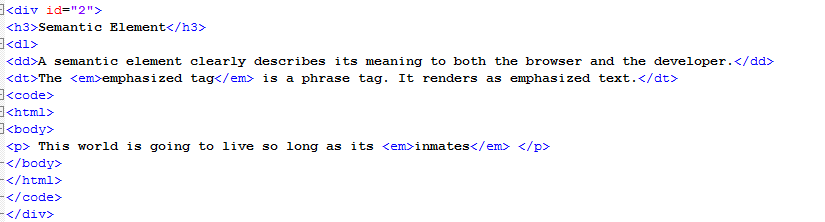

Topics
About HTML
Basic Tags
Semantic Tag
 HTML
HTML
About HTML
HTML (Hypertext Markup Language) is a text-based approach to describing how content contained within an HTML file is structured. This markup tells a web browser how to display the text, images and other forms of multimedia on a webpage.
HTML tag vs. element vs. attribute
The idea of using text to describe how text should be displayed might sound somewhat paradoxical, but it is not. This is the whole reason why HTML is known as a markup language.
Using HTML, a document containing text is further marked up with additional text describing how the document should be displayed. To keep the markup part separate from the actual content of the HTML file, there is a special, distinguishing HTML syntax that is used. These special components are known as HTML tags. The tags can contain name-value pairs known as attributes, and a piece of content that is enclosed within a tag is referred to as an HTML element.
Editing HTML example
In the following HTML example, there are two HTML elements. Both elements use the same paragraph tag, designated with the letter p, and both use the directional attribute dir, although a different value is assigned to the HTML attribute's name-value pairing, namely rtl and ltr.
HTML is the standard markup language for creating Web pages.
HTML stands for Hyper Text Markup Language
HTML describes the structure of Web pages using markup
HTML elements are the building blocks of HTML pages
HTML elements are represented by tags
HTML tags label pieces of content such as "heading", "paragraph", "table", and so on
Browsers do not display the HTML tags, but use them to render the content of the page
------------------------------------------------------------------------------------------------------------------------------------------
Basic Tags
Definition of: HTML tag. HTML tag. An HTML code that defines every structure on an HTML page, including the placement of text and images and hypertext links. HTML tags begin with the less-than (<) character and end with greater-than (>). These symbols are also called "angle brackets."
Defines the document type
All HTML documents must start with a document type declaration: .
The HTML document itself begins with < html > and ends with < /html >.
The visible part of the HTML document is between < body > and < /body >.
HTML headings are defined with the < h1 > to < h1 > tags.
< h1 > defines the most important heading. < h6 > defines the least important heading
HTML paragraphs are defined with the < p > tag
HTML links are defined with the < a > tag
The link's destination is specified in the href attribute.
Attributes are used to provide additional information about HTML elements.
HTML images are defined with the < img > tag.
The source file (src), alternative text (alt), width, and height are provided as attributes:
HTML buttons are defined with the < button > tag:
HTML lists are defined with the lt ul gt (unordered/bullet list) or the lt ol > (ordered/numbered list) tag, followed by <li > tags (list items):
---------------------------------------------------------------------------------------------------------------------------------------------
Semantic Tags

What is Semantic HTML
Semantic HTML or semantic markup is HTML that introduces meaning to the web page rather than just presentation. For example, a < p> tag indicates that the enclosed text is a paragraph. This is both semantic and presentational, because people know what paragraphs are and browsers know how to display them.
On the flip side of this equation, tags like < b> and < i> are not semantic, because they define only how the text should look (bold or italic) and do not provide any additional meaning to the markup.
Examples of semantic HTML tags include the header tags < h1> through < h6>, < blockquote>, < code> and < em>. There are many more semantic HTML tags that can be used as you build a standards-compliant website.
Why You Should Care About Semantics
The benefit of writing semantic HTML stems from what should be the driving goal of any web page— the desire to communicate. By adding semantic tags to your document, you provide additional information about that document, which aids in communication. Specifically, semantic tags make it clear to the browser what the meaning of a page and its content is. That clarity is also communicated with search engines, ensuring that the right pages are delivered for the right queries.
Semantic HTML tags provide information about the contents of those tags that goes beyond just how they look on a page. Text that is enclosed in the < code> tag is immediately recognized by the browser as some type of coding language. Instead of trying to render that code, the browser understands that you are using that text as an example of the code for the purposes of an article or online tutorial of some kind.
Using semantic tags gives you many more hooks for styling your content. Perhaps today you prefer to have your code samples display in the default browser style, but tomorrow, you want to call them out with a gray background color, and later you want to define the precise mono-spaced font family or font stack to use for your samples. You can easily do all of these things by using semantic markup and smartly applied CSS.
Use Semantic Tags Correctly
When you want to use semantic tags to convey meaning rather than for presentation purposes, you need to be careful that you don't use them incorrectly simply for their common display properties. Some of the most commonly misused semantic tags include:
blockquote - Some people use the < blockquote > tag for indenting text that is not a quotation. This is because blockquotes are indented by default. If you simply want to benefits of indentation, but the text is not a blockquote, use CSS margins instead.
p - Some web editors use < p > </p> (a non-breaking space contained in a paragraoph) to add extra space between page elements, rather than defining actual paragraphs for the text of that page. As with the previously mentioned indenting example, you should use the margin or padding style property to add space.
ul - Like blockquote, enclosing text inside a <ul> tag indents that text in most browsers. This is both semantically incorrect and invalid HTML, as only < li> tags are valid within a <ul> tag. Again, use the margin or padding style to indent text.
h1–h6 - The heading tags can be used to make fonts bigger and bolder, but if the text is not a heading, it should not be inside a heading tag. Use the font-weight and font-size CSS properties instead if you want to change the size or weight of specific text on your page..
By using HTML tags that have meaning, you create pages that impart more information than by just surrounding everything with < div> tags.
Which HTML Tags Are Semantic?
While nearly every HTML4 tag and all the HTML5 tags have a semantic meaning, some tags are primarily semantic in nature.
For example, HTML5 has redefined the meaning of the and tags to be semantic. The tag doesn't convey extra importance, but rather text that is typically rendered in bold. The < i> tag also doesn't convey extra importance or emphasis, but rather defines text that is typically rendered in italics.